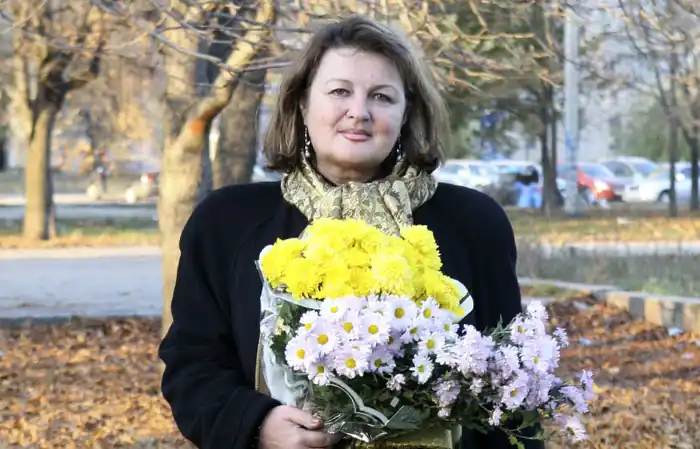
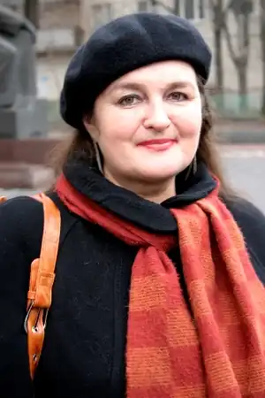
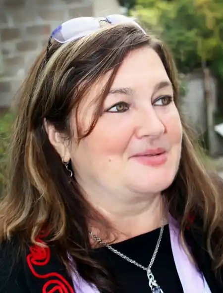

Ле́ся Степовичка, справжнє прізвище Шуманн Олександра Несторівна (ур. Булах; нар. 21 травня 1952) — українська поетеса, перекладач, прозаїк. Член Національної спілки письменників України та Національної спілки журналістів України. Заслужений працівник культури України.
Олександра Булах народилася 21 травня 1952 року в селі Петриківці Царичанського району на Дніпропетровщині. Закінчила українську школу-інтернат № 1 м. Дніпропетровська. Працювала швачкою, робітницею на заводі. У 1976 році з відзнакою закінчила романо-германське відділення (стаціонар) філологічного факультету Дніпропетровського державного університету та аспірантуру при кафедрі німецької мови ДДУ. Спеціальність — філолог-германіст. Автор кандидатської дисертації з германістики. Тривалий час викладала на кафедрі німецької мови ДДУ й на кафедрі іноземних мов Дніпропетровського металургійного інституту Закінчила курси гідів-перекладачів (1998). У 1989—1999 працювала перекладачем в Україні, ФРН, Австрії, Люксембурзі, Бельгії. У 1994—1995 роках проживала в Західному Берліні з чоловіком Міхаелем Шуманном.
Член Національної Спілки письменників України та Національної Спілки журналістів України. У 2002—2012 роках — голова правління Дніпропетровської обласної письменницької організації НСПУ, член Ради та член Президії НСПУ (Київ). Квітень 2012 — квітень 2013 рр. — завідувач літературною частиною Дніпропетровській філармонії. З 2013 р. — провідний фахівець Центру культури української мови ім. О.Гончара НТУ Дніпровська політехніка, викладач кафедри філології та мовних комунікацій. Член Всеукраїнського Жіночого товариства імені Олени Теліги. Заступник голови Дніпропетровської обласної організації Всеукраїнської ГО Українсько-австрійське товариство "Галіція". Член Всеукраїнської громадської організації німців "Відродження". Член громадської організації "Петриківське земляцтво". Голова Дніпровської філії Всеукраїнської громадської організації "Союз українок".